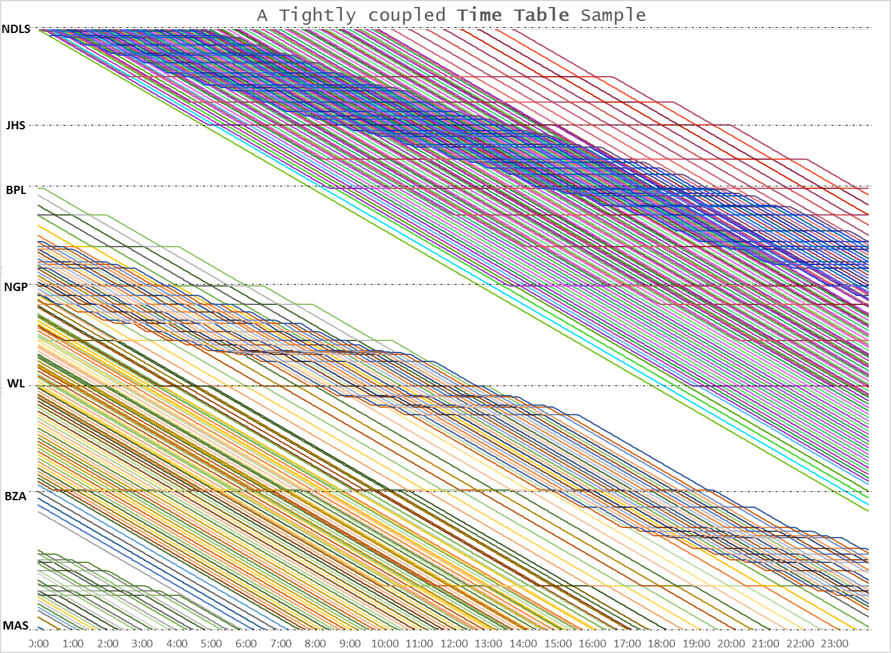

India's busiest railway lines are full — not because we lack tracks, but because of how trains are timed on them. A sharper, slot-based timetable can carry far more people and goods on the rails we already have, with no new running lines.
Trains are the most affordable way for Indians to travel long distances and the cleanest way to move freight. But years of limited investment have left the network choked. Instead of meeting demand, the system manages it — advance bookings, Tatkal premiums, ID rules and a thicket of freight regulations all exist, in part, to ration a scarce number of train paths.
Laying new track is expensive and slow. The good news: a large amount of capacity is already sitting unused inside the existing timetable. It can be unlocked with better scheduling — quickly, and at a fraction of the cost.
Today, fast and slow trains share the same line and constantly get in each other's way — a single express stuck behind a slow goods train holds up everything behind it. The fix: keep the main line moving at one steady speed, give every train a precise 5-minute time slot, and let trains that need to stop pull aside onto a station loop — so the main line never gets blocked. A slot-based timetable that keeps the main line moving at one steady speed lifts a saturated corridor toward ~500 trains a day on existing rails, and proven on a computer before a single train moves.
Every train on the main line runs at the section's full through-speed, evenly spaced five minutes apart — like vehicles on a free-flowing expressway.
A train that must halt pulls onto a lengthened station loop, stops there, and rejoins — so it never blocks the train behind it.
Because stopping costs a little time, that train simply slots back in behind — faster trains sail past at full speed. Fair, predictable, and built into the plan.
A live readout shows each driver how many seconds they are ahead of or behind schedule — our optional WhatsComing app, working alongside the Railways' Kavach safety system — so every train holds its slot to the second.
This isn't just an idea on paper. A complete, second-by-second slot timetable has already been built for the Delhi–Chennai trunk route — fitting on the order of 500 trains a day across goods, Rajdhani/Duronto, express and passenger services, all on the existing double line.

And Indian Railways has already proven the same thinking works. On Western Railway's saturated Surat–Vadodara section — where rivers ruled out new lines — the Railways lengthened station loops, upgraded freight speeds and modernised signalling to squeeze far more trains through the same corridor. This proposal applies that proven, throughput-first approach more widely.
More trains and predictable timings mean tickets become easier to get and journeys run on schedule. Less waitlisting, less Tatkal scramble, fewer cascading delays — travel that simply works.
The tracks, stations and electrification already paid for would carry far more traffic. Capacity unlocked in months of analysis instead of years of construction.
A disciplined, free-flowing main line moves goods at sustained speed — quicker wagon turnaround, more loading, and reliable delivery times for industry.
Every extra train path is new revenue on assets that already exist, at almost no added infrastructure cost. A healthier railway can keep fares affordable.
Moving freight and travellers from diesel trucks and buses onto electrified rail cuts diesel demand directly. Rail uses 75–90% less energy than road for the same freight.
India imports nearly 90% of its crude. Less imported diesel means fewer dollars flowing out — turning railway efficiency into national energy security.
Rail moves freight using roughly 75–90% less energy than road. Shifting India's freight mix from ~27% rail toward the 45%-by-2030 target is one of the largest fuel-and-forex savings available to the country.
This is not a risky experiment. It starts entirely on paper: a faithful computer model of one line that first reproduces today's actual timetable before suggesting a single change. Nothing moves on the tracks until the Railways' own operating officers are satisfied. The only physical work is lengthening station loops and signalling upgrades — far cheaper than laying new lines.